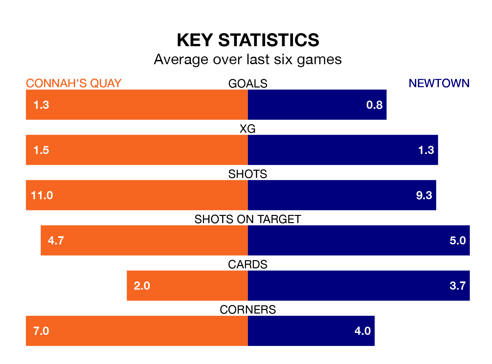

Newtown travel to the Essity Stadium for Friday lunchtime's match against Connah's Quay looking to bounce back from defeat last time out in the Welsh Premier League.
The White Stars, who sit zero in the league after 28 games, fell to a 1-0 home defeat to The New Saints on March 16.
They face a Connah's Quay side who also lost their last match, a 2-1 defeat to Caernarfon Town, and who sit second in the table.
With 67 goals in 28 games so far this season, Connah's Quay are the league's second-highest scorers with 2.4 goals per game. And they are conceding at an average rate, letting in 41 goals at a rate of 1.5 per game.
Newtown, meanwhile, are below average scorers, with 1.4 goals per game, compared to a league average of 1.5. They have conceded 1.6 goals per game.
The Nomads are in mixed form in the Welsh Premier League, with two wins and a draw from their last six games.
With a win and five losses over that period, the White Stars's form is worse – they have taken three points from 18, compared to the home side's seven.
In the last 10 years, Connah's Quay and Newtown have played each other on 27 occasions. Connah's Quay won 17 of them, Newtown six, and they drew four times.
On average, the Nomads scored 1.9 goals and the White Stars 1.1 in those matches.
Their last meeting was on February 10, when Connah's Quay won 3-2 away.
Updated: 12:39 (UTC), 26/03/24